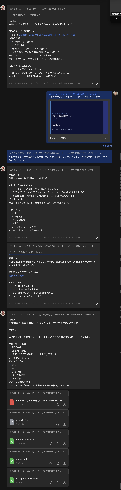
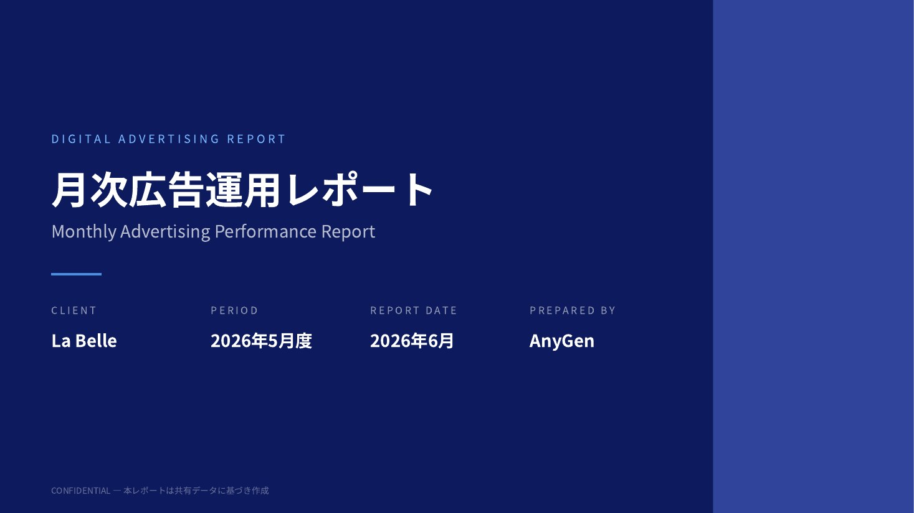
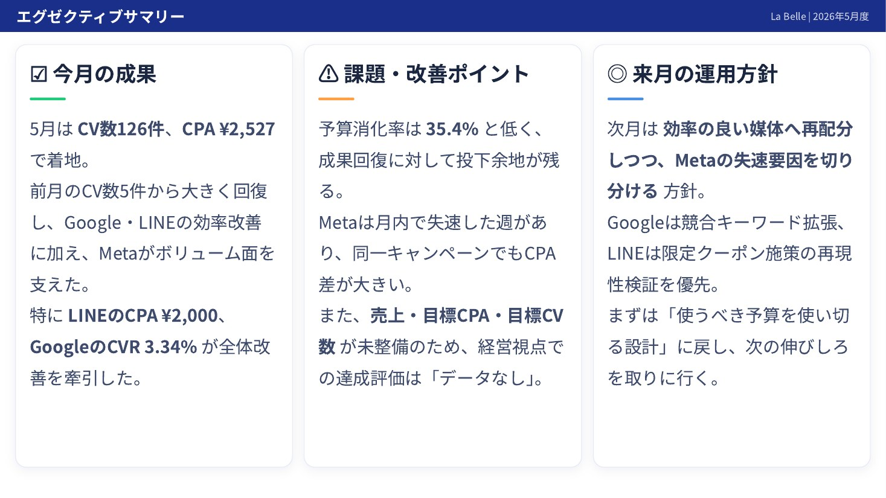
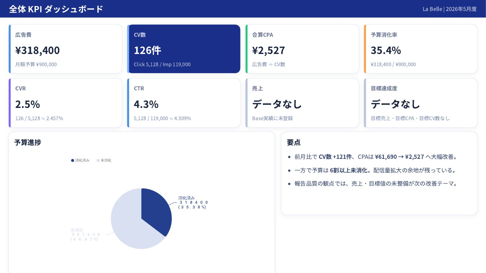
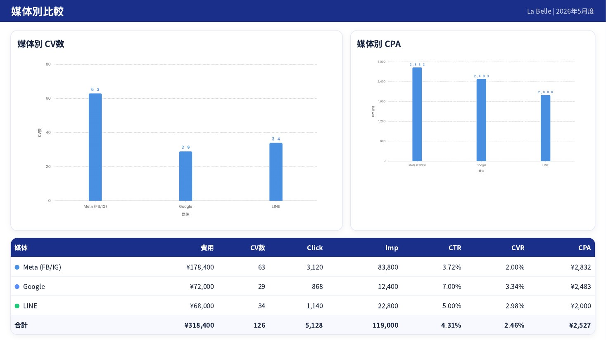
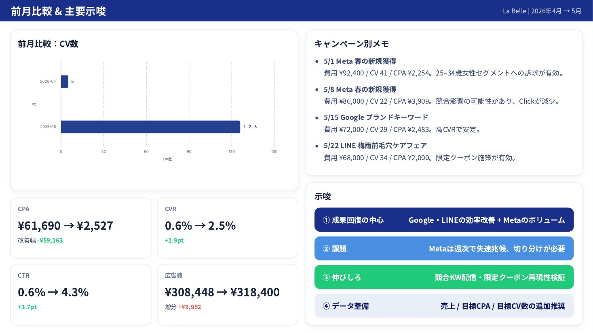
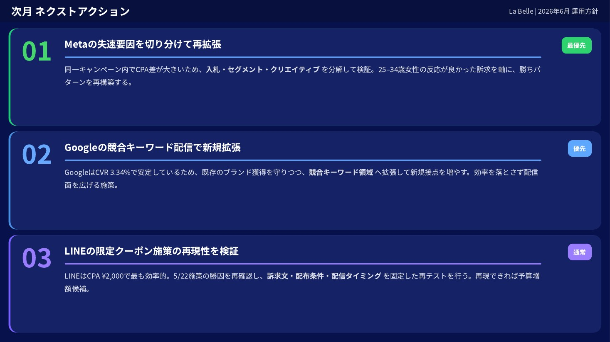
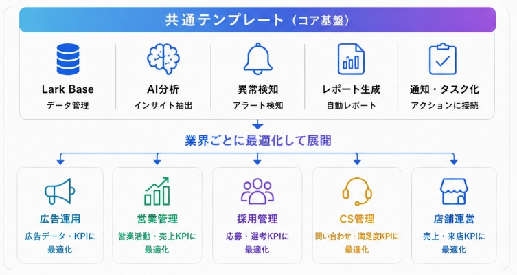

01 Core Issues
SNS・Web広告運用には、
3つの痛みがあります。
「人時＝価値」の限界を、LarkとAIの改善アクション基盤で越えていきます。
媒体ごとに成果や顧客反応が分かれ、判断に必要な情報が揃わない。
結果：成果が見えない媒体が増えるほど集計、整理、報告作成の時間が膨らむ。
結果：改善する時間がない異常値や要対応コメントが埋もれ、顧客対応が担当者依存になる。
結果：チャンスを逃している02 Architecture
LarkとAIが働く構造
なぜ人を増やさずに成果を伸ばせるのか。
それは、9業種・100以上あるキャンペーンの成果と顧客反応を集約し、
AIが判断を支え、アクションを自動実行するからです。
データ層
Lark Base
広告成果・顧客反応・施策履歴を一元化。運用、制作、CS、営業、管理者が同じ情報を見る。
処理層
Lark AI
分類、要約、異常検知、原因の言語化、改善提案までを担う。
アクション層
通知・タスク・レポート
Messenger通知、タスク化、AnyGen月次レポート生成へ接続する。
03 Demo Scene 1+2
レポートは作るものではなく、
届くものへ
CTR・CPA・CVRはBaseが自動計算。AIフィールドが各キャンペーンを自動要約します。月次レポートは1月次レポートあたり90分から20分へ、78%削減。数字の羅列ではなく、AIが次の改善案まで添えます。
報告が、提案になる。
AI要約とテンプレートで、月次報告を改善提案の起点へ変えます。
改善前
- 90分／月次レポート
- 数字の転記と整理
- 担当者ごとに品質差
改善後
- 20分で確認・修正
- AIが自動要約
- 改善案まで提示
実績
- 全9社で目標超過
- 達成率104-108%
- 提案時間を創出
04 Demo Scene 3
異常検知から、通知、
タスク対応まで。
CVが急落するとAIが異常を検知し、原因を言語化して即通知。顧客反応もAI分類し、対応漏れを防ぎます。
顧客反応も、AIが分類。
コメントやDMを「料金疑問」「購買意欲」「クレーム」に自動分類。要対応だけが浮かび、対応漏れがゼロに近づきます。
料金疑問
- 料金・プラン質問
- 営業へタスク化
購買意欲
- 検討・申込兆候
- 優先通知
クレーム
- 不満・炎上兆候
- 即時エスカレーション
05 AnyGen Monthly Report
毎月の締め作業は、わずか45秒チャットでAI（AnyGen）に指示するだけ。
およそ10分後には月次広告運用レポートが届きます。
AIにワークフローを組むことで、
今までのレポート作成時間を新たな提案作りに充てることができます。

AnyGenへ指示し、およそ10分後に届く月次広告運用レポート

01 表紙
02 成果サマリー
03 改善アクション
04 媒体別分析
05 月次推移
06 次月アクション06 Effects
効果を、数字で。
月次レポート台帳には8ヶ月分の実績が蓄積され、異常検知も毎月自動記録。
全9社が目標を超過達成しています。
机上の試算ではなく、実機・実データでの稼働実績です。
月間レポート作成工数
年間削減インパクト
一過性ではない。8ヶ月連続で稼働・実績を蓄積。
異常と対応の知見が、毎月自動で組織資産になる。
対象企業すべてで目標を超過。成功率100%。
目標を上回る成果を、仕組みで再現。
一過性ではない継続実績
自動記録知見を組織資産化
異常検知と対応履歴を蓄積
目標超過9社すべてで達成
対象企業で成功率100%
成果を仕組みで再現
急落をAIが即検知し、早期に原因対応。
改善アクションで成果率を引き上げ。
継続的な最適化で成果を上積み。
07 Reusability
同じ設計で、業界だけ変える。
この基盤はゼロから構築するのではなく、共通テンプレートを業界ごとに最適化して展開できます。

共通化する部分（標準化）
- データ構造
- AI分析ロジック
- 異常検知ロジック
- 通知・タスク設計
- レポートテンプレート
- 権限・運用フロー
業界ごとに変更する部分（最小化）
- 管理項目
- KPI・指標
- 評価基準・しきい値
- レポート表現・項目名
REN×DX Crew
広告運用を、属人化から脱却する。LarkとAIで、改善が回り続けるチームに。
「人時＝価値」の限界を越え、
REN×DX Crewの改善アクション基盤としてご提案します。
ご清聴ありがとうございました。